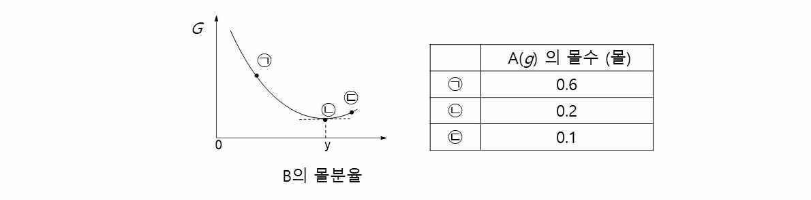

문제 5
5-1 단계 1
19세기말 독일의 화학자 하버는 질소와 수소를 반응시켜 암모니아를 합성하였다.
(1) 화학반응식을 나타내시오.
(2) 표준 상태에서 암모니아 51g 을 합성하는 데 필요한 질소는 몇 L일까? (질소의 원자량은 14, 수소의 원자량은 1이다.)
(3) 이 반응에서 산화되는 물질은 무엇인가? 전기음성도를 이용하여 설명하시오.
5-2 단계 2
다음은 기체 A가 반응하여 기체 B를 생성하는 반응의 화학 반응식과 특정 온도에서 농도로 정의되는 평형 상수 (\(K\)) 이다.
\[2\text{A}(g) \rightleftharpoons \text{B}(g), \quad K = 10\]
그림은 그 온도에서 실린더에 A(\(g\)) \(x\)몰을 넣고 반응시켰을 때, B의 몰분율에 따른 자유 에너지(\(G\))를, 표는 ㉠ ~ ㉢에서의 A(\(g\))의 몰수를 나타낸 것이다. ㉢에서 실린더 속 기체의 부피는 1L 이다.

(1) 평형상수 \(K\) 를 구하는 식을 나타내시오.
(2) 왼쪽 그래프에서 평형상태를 나타내는 점은 어디이며 그 이유는 무엇인가?
(3) 처음에 넣은 A(\(g\))의 몰수 \(x\)를 계산하시오.